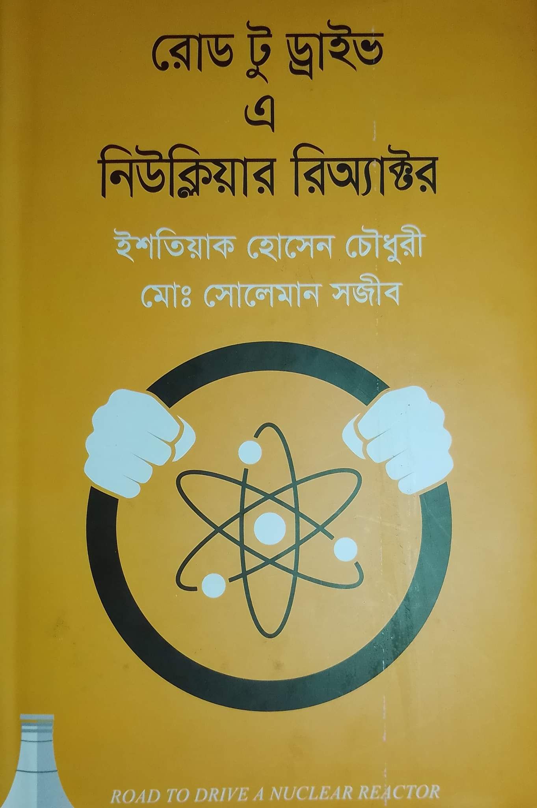

রোড টু ড্রাইভ এ নিউক্লিয়ার রিঅ্যাক্টর
ইশতিয়াক হোসেন চৌধুরী
সোলেমান সজীব
পরমাণুর নিউক্লিয়াস, নিউক্লিয়ার বিক্রিয়া বা কণা এদের সম্পর্কে আমার জানার আগ্রহটা বেশি। এর মাঝে নিউক্লিয়র রিয়েক্টরের প্রতি আগ্রহ আরো বেশি। সেই সূত্রে অনলাইনে কিছু অল্প সল্প পড়ালেখা করি৷ আর মাঝে মাঝে নিউক্লিয়ার ফিজিসিস্ট হওয়ার ইচ্ছা জাগে। যদিও এই ইচ্ছা মাথার থেকে জোর করে বের করে দেই। যাই হোক, বেশ কিছুদিন ধরেই শুনে আসছি রুপপুর পারমানবিক বিদ্যুৎকেন্দ্রের কথা। তাই অনলাইনে খোঁজাখুজি করতে বাংলায় লেখা একটা বই পেলাম৷ নাম ❝রোড টু ড্রাইভ এ নিউক্লিয়ার রিঅ্যাক্টর❞।

বইয়ে রিয়েক্টরে খুটিনাটি সহজ ভাষায় উপস্থাপন করা হয়েছে। বইটা প্রথম দিকে নিউক্লিয়ার বিক্রিয়ার ফিজিক্স নিয়ে আলোচনা করা হয়েছে৷ যেমন কোন নিউট্রন (ফাস্ট নিউট্রন বা থার্মাল নিউট্রন) দিয়ে কোন ধরনের ফুয়েল যেমন ইউরেনিয়াম ২৩৫ বা ইউরেনিয়াম ২৩৮ ইত্যাদির ফিশন ঘটানো সম্ভব৷ কেন বিশেষ ধরনের নিউট্রন দিয়েই এই ফিশনের কাজটা ভালো মতো সম্ভব এগুলোর আলোচনা। সাথে আছে মডারেটরের আলোচনা৷ কোথায় কোন মডারেটর ব্যাবহার করে নিউট্রনের গতি কমানো যায়; পানি ব্যাবহার , ডিউটোরিয়াম নাকি গ্রাফাইটের ব্যাবহার মডারেটর হিসেবে উত্তম৷
মূল আকর্ষণ রয়েছে বইয়ের মাঝামাঝিতে। এখন পর্যন্ত বেশ কয়েক ধরনের নিউক্লিয়ার রিয়েক্টরের প্রচলন তথা ব্যাবহার আছে। এরমাঝে ওয়াটার প্রেসারাইজড রিয়েক্টরের ব্যাবহার বেশি৷ বইয়ে এই ধরনের রিয়েক্ট নিয়ে আলোচনা করা হয়েছে৷ এই অংশটা আপনাকে কিছুটা থ্রিল দিবে৷ রিয়েক্টরের অভ্যন্তরীণ যন্ত্রপাতির বর্ণনা সহ কিভাবে কাজ করে ইত্যাদির ব্যাখ্যা আছে। আপনি বুঝতে পারবেন নিউক্লিয়ার রিয়েক্টরের কোন কিছুর সামান্য পরিবর্তন কি প্রভাব ফেলতে পারে৷ এই অংশ সম্পর্কে বিস্তারিত না বলি। পড়লেই মজা বুঝবেন।
শেষ দিকে কিছু সেন্সর নিয়ে আলাপ হয়েছে৷ সেন্সর সম্মূহের ডেটা একই থাকলেও যে রিয়েক্টরের ভিতরের কাহিনি এক না, এদিকে ইউরেনিয়াম-২৩৮ যে প্লুটোনিয়ামে পরিণত হচ্ছে, আবার এই প্লুটোনিয়াম যে ফিশন করতেছে সেটাও বেশ মজার এবং জটল৷ সাথে চিত্তাকর্ষকও বটে। শেষ দিকে আরো বেশ কিছু রিয়েক্টরের ব্যাপারে সংক্ষিপ্ত আলোচনা আছে। নিরাপত্তার বিষয় সম্পর্কে বলা আছে৷ এবং ইত্যাদি।
কিছু বিষয় না বললেই নয়। একই নামে ইংরেজি ভাষায় রচিত একটি বই আছে। মলাট ও একই৷ প্রথম দেখায় মনে হতে পারে বইটা কোন অনুবাদ বা ভাবানুবাদ। আমি অনুবাদ বা ভাবানুবাদ বলতে ইচ্ছুক নই। বলা যেতে পারে লেখকেরা ওই বইটাকে কাঠামো হিসেবে ধরে আমাদের রুপপুরে নির্মিত নিউক্লিয়ার প্ল্যান্টকে মাথায় রেখে অনেক কিছুই সংযোজন বিয়োজন করেছেন।
শেষ কথা এই, বইটা পড়ে বেশ ভালো লেগেছে। আপনারা নিউক্লিয়ার রিয়েক্টর সম্পর্কে জানতে চাইলে বইটি পড়তে পারেন। রেটিং ৮/১০।
বইয়ের নাম: রোড টু ড্রাইভ এ নিউক্লিয়ার রিঅ্যাক্টর
লেখকের নাম: ইশতিয়াক হোসেন চৌধুরী এবং সোলেমান সজীব।
প্রকাশনি: অন্বেষা
মূল্য: ২৭০/-
পৃষ্ঠা সংখ্যা: ১৫৭।
হ্যাপি রিডিং ❤️।
সম্ভাব্য প্রাপ্তিস্থান সমূহের একটি Rokomari.